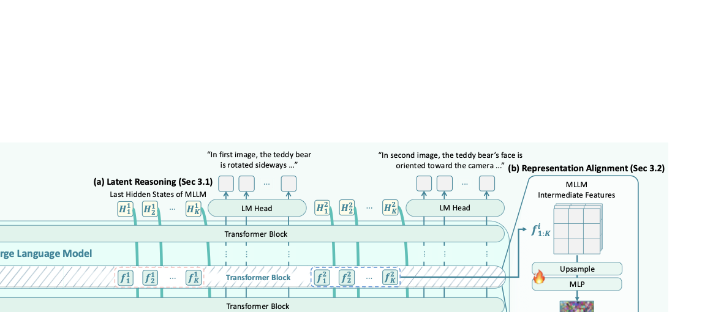
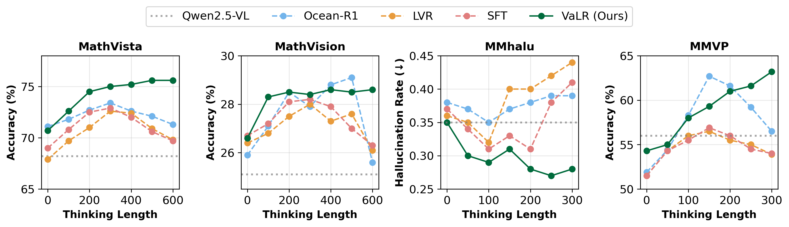
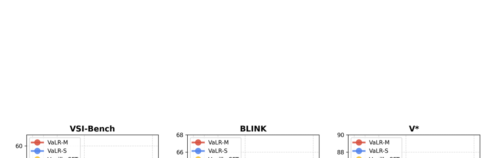

Vision-aligned Latent Reasoning for Multi-modal Large Language Model
Authors: Byungwoo Jeon (KAIST), Yoonwoo Jeong (POSTECH), Hyunseok Lee (KAIST), Minsu Cho* (POSTECH/RLWRLD), Jinwoo Shin* (KAIST/RLWRLD)
Project: rootyjeon.github.io/valr
核心贡献
- 提出 VaLR（Vision-aligned Latent Reasoning）：一种多模态推理框架，在 CoT 推理的每一步之前动态生成与视觉信息对齐的潜在 token（latent tokens），作为"视觉检查点"来保持推理过程中的视觉 grounding。
- REPA 表征对齐：将 MLLM 中间层的 hidden states 与预训练视觉编码器（DINOv3、SigLIPv2、CLIP 等）的特征进行 patch-wise 余弦相似度对齐，鼓励潜在 token 编码视觉信息。
- 多编码器对齐：同时利用多个视觉编码器（如 DINOv3 + SigLIPv2 + π³）的互补表征，注入语义、空间和 3D 几何信息。
- 两阶段课程训练：Stage 1 标准 SFT 建立 CoT 推理基础 → Stage 2 插入潜在 token 并使用 REPA 损失训练。
- 首次在 MLLM 上展现出 test-time scaling 行为：随着推理长度增加，VaLR 性能单调提升，而基线方法逐渐退化。
动机与背景
问题
MLLM 在需要多步推理的任务（如 CUA、VLA）中表现不佳，根本原因是：随着生成序列变长，视觉信号逐渐衰减（dilution of visual information），导致模型无法有效利用 test-time scaling。现有方法要么只增强文本推理而忽略视觉信号逐步衰减，要么仅在推理开始时提供一次性的静态视觉特征，缺乏动态的视觉信息回注机制。
相关工作对比
| 研究方向 | 代表工作 | 局限 |
|---|---|---|
| 文本 CoT + SFT/RL | Math-LLaVA, Flow-DPO | 视觉信号随序列增长衰减 |
| 交错视觉 token | DeepEyes, Machine-CoT | 仅使用静态单视角特征，一次性注入 |
| 潜在空间推理 | Monet, CoVT, LVR | 视觉信息仅作为固定初始上下文 |
| VaLR（本工作） | — | ✅ 每一步前动态注入视觉对齐的潜在 token |
方法详解
1. 潜在推理机制（Latent Reasoning）

VaLR 在推理过程中交替切换两种模式：
- 语言模式：正常自回归生成文本 token，使用 token embedding 作为 Transformer 输入
- 潜在模式：生成 K 个潜在 token，使用上一时刻的 hidden state
h_t作为下一时刻输入（而非 token embedding）
E_{t+1} = [E_t; h_t] if 潜在模式
E_{t+1} = [E_t; e(x_{t+1})] if 语言模式
- 模型预测
<latent>token 进入潜在模式 - 固定 K 步后（默认 K=16），预测
</latent>token 回到语言模式 - 最终通过 LM-Head 从 hidden state 解码文本输出
核心思想：每一步 CoT 推理步骤 rⁱ 之前插入 K 个潜在 token [ℓ₁ⁱ, ..., ℓₖⁱ]，形成：
v, q → (ℓ_{[1:K]}^(i), r^(i))_{i=1}^N → a
2. 表征对齐（REPA — Representation Alignment）
在潜在模式下，将 MLLM 中间层特征与外部视觉编码器的 patch-wise 特征对齐：
对齐目标：
L_REPA = -1/(N·P) · Σᵢ₌₁ᴺ Σₚ₌₁ᴾ sim( F̂_MLLMⁱ[p,:], F_ϕⁱ[p,:] )
其中：
F_ϕⁱ：视觉编码器 ϕ 对图像 Iⁱ 提取的 patch 特征，维度 R^(P×D)F_MLLMⁱ：MLLM 第 12 层（中间层）提取的 latent token 特征F̂_MLLMⁱ = ψ(Upsample(F_MLLMⁱ))：通过可学习 MLP ψ 投影到与视觉特征相同维度sim(·,·)：余弦相似度
关键点：
- REPA 仅用于训练阶段，推理时不使用外部视觉编码器
- 对齐使 MLLM 学会在潜在 token 中"内化"视觉信息
3. 多编码器对齐
利用不同视觉编码器的互补能力：
| 编码器 | 擅长能力 |
|---|---|
| CLIP / SigLIPv2 | 语义理解（semantics） |
| DINOv2/v3 | 细粒度外观 + 空间关系 |
| π³ | 3D 空间结构 |
多编码器 REPA 损失为各编码器 REPA 损失的均值：
L_REPA^multi = (1/M) · Σₘ₌₁ᴹ L_REPA^(m)
每个编码器有独立的可学习投影头 ψₘ。
4. 两阶段训练流程
Stage 1：标准 CoT SFT（450K 样本）
- 在预训练 MLLM 上进行标准 CoT 监督微调
- 冻结视觉编码器，仅训练解码器
- 损失：标准交叉熵
L_CE - 数据集混合：Zebra-CoT、CogCoM、ReFocus、Visual-CoT、OneThinker-SFT、GCoT
Stage 2：潜在 token 训练 + REPA（450K 样本）
- 在每个推理步骤前插入 K=16 个潜在 token（首尾用
<latent>/</latent>包裹） - 总损失：
L = L_CE + λ·L_REPA（λ = 0.5） - 多视角数据：使用 GPT-4o 自动标注每个推理步骤对应的目标图像
- 交错数据：利用数据集中自然存在的图像插入位置
实验与结果
实验设置
- 基础模型：Qwen2.5-VL-7B
- 默认对齐编码器：DINOv3 (ViT-L)
- VaLR-S：单编码器对齐（DINOv3）
- VaLR-M：多编码器对齐（DINOv3 + SigLIPv2 + π³）
- 训练：4× NVIDIA Tesla A100，DeepSpeed ZeRO-2
3D 空间推理（VSI-Bench）
| 方法 | Avg. | 相对距离 | 绝对距离 | 物体计数 |
|---|---|---|---|---|
| GPT-4o | 34.0 | 37.0 | 5.3 | 46.2 |
| Qwen2.5-VL-7B | 33.0 | 38.6 | 14.8 | 40.9 |
| + vanilla SFT | 33.7 | 39.4 | 14.7 | 42.3 |
| + LVR | 18.4 | 35.1 | 3.6 | 21.4 |
| + CoVT | 18.6 | 35.9 | 2.3 | 16.5 |
| + Monet | 14.0 | 38.0 | 0.1 | 1.9 |
| VaLR-S | 41.5 | 43.9 | 24.5 | 49.0 |
| VaLR-M | 52.9 | 50.0 | 40.6 | 66.4 |
关键发现：LVR、CoVT、Monet 等潜在推理 baselines 在 VSI-Bench 上崩溃（14-18%），因为没有视觉对齐，长推理下视觉信息完全丧失。VaLR-M 在 8 个子任务上全面 SOTA。
感知任务 Benchmark
| 方法 | BLINK | MMVP | MMStar | V* | CVBench |
|---|---|---|---|---|---|
| GPT-4o | 63.0 | 68.7 | 65.2 | 42.9 | 79.2 |
| Qwen2.5-VL-7B | 55.7 | 56.0 | 67.1 | 76.4 | 74.5 |
| + LVR | 52.8 | 59.3 | 64.4 | 81.7 | 76.9 |
| + CoVT | 56.0 | 58.7 | 69.2 | 78.0 | 80.0 |
| + Monet | 49.1 | 50.0 | 53.3 | 83.3 | 71.1 |
| VaLR-S | 63.1 | 60.3 | 70.8 | 86.4 | 83.1 |
| VaLR-M | 64.7 | 60.3 | 72.3 | 86.9 | 87.6 |
关键发现：VaLR 不仅在长上下文推理中提升显著，在短上下文感知任务上也全面优于 baseline，说明视觉 grounding 是通用能力。
Test-time Scaling 行为

- 在 MathVista、MathVision、MMhalu、MMVP 四个 benchmark 上按推理长度分组
- Baseline（Ocean-R1, LVR）：在中等推理长度达到峰值后退化
- VaLR：随着推理长度增加，性能单调提升
- 在 MMVP 上，Ocean-R1 从 62.7% 崩溃到 56.5%（300 tokens），而 VaLR 持续保持高性能
消融与分析
REPA 表征对齐的有效性
| 配置 | VSI-Bench | BLINK | V* | CVBench |
|---|---|---|---|---|
| Qwen2.5-VL-7B | 33.0 | 55.7 | 76.4 | 74.5 |
| VaLR w/o VA（无视觉对齐） | 34.0 | 57.1 | 75.9 | 73.4 |
| VaLR w/ QE（Qwen 原生编码器） | 39.6 | 58.9 | 81.7 | 81.6 |
| VaLR w/ DINOv3 | 41.5 | 63.1 | 86.4 | 83.1 |
即使使用 Qwen 原生编码器（无外部编码器），VaLR 仍显著优于 baseline；外部编码器进一步增益。纯潜在推理（w/o VA）几乎无提升，说明视觉对齐是核心。
不同视觉编码器的通用性
| 对齐编码器 | BLINK | MMVP | MMStar | V* | CVBench |
|---|---|---|---|---|---|
| Baseline | 55.7 | 56.0 | 67.1 | 76.4 | 74.5 |
| + CLIP | 62.3 | 59.3 | 71.0 | 83.2 | 79.1 |
| + SigLIPv2 | 62.8 | 59.7 | 71.3 | 83.2 | 81.9 |
| + DINOv2 | 62.7 | 60.0 | 70.7 | 83.8 | 81.8 |
| + DINOv3 | 63.1 | 60.3 | 70.8 | 86.4 | 83.1 |
VaLR 对各种视觉编码器均有效，编码器越强则增益越大。
多编码器的互补效应
| π³ | DINOv3 | SigLIPv2 | VSI-Bench | BLINK | MMStar |
|---|---|---|---|---|---|
| ✗ | ✗ | ✗ | 33.0 | 55.7 | 67.1 |
| ✓ | ✓ | ✗ | 52.4 | 64.6 | 68.9 |
| ✗ | ✓ | ✓ | 41.9 | 62.5 | 72.0 |
| ✓ | ✓ | ✓ | 52.9 | 64.7 | 72.3 |
π³ 主要提升 3D 任务（VSI-Bench），SigLIPv2 提升语义感知；三者结合最佳。
对齐层选择
- Front（第 4 层）：提升有限
- Middle（第 12 层）：效果最佳，与前人发现一致——视觉信息最显著地体现在 MLLM 中间层
- Last（第 27 层）：效果次之
数据扩展性

- 随着训练数据从 10K → 450K，VaLR 持续提升
- Vanilla SFT 在 200K 后饱和
- VaLR-M 在 V* 上达到同等性能所需的训练数据 ≤ Vanilla SFT 的 1/20
推理效率
| 方法 | 32-view (s) | 1-view (s) |
|---|---|---|
| Qwen2.5-VL | 1.21 | 0.64 |
| + vanilla SFT | 1.43 | 0.68 |
| + LVR | 1.49 | 0.66 |
| + Monet | 1.51 | 0.79 |
| + VaLR | 1.55 | 0.80 |
VaLR 的推理开销很小（比 vanilla SFT 仅慢约 10%），且在推理时不需要外部视觉编码器。
总结与评价
方法亮点
- 简洁有效：通过在每步 CoT 前插入视觉对齐的潜在 token，以极小的推理开销实现了显著的性能提升
- 首次展示 MLLM 的 test-time scaling：基线在长推理中退化，VaLR 持续提升——这可能是 MLLM 推理方向的重要里程碑
- 编码器通用性：VaLR 框架适配于任何视觉编码器，且多编码器互补产生协同增益
- 推理效率：无需在推理时使用外部视觉编码器（对齐信息已内化到潜在 token 中），对比 input token 方法有明显效率优势
局限与思考
- 数据依赖性：REPA 对齐需要每步推理对应的目标图像标注，多视角数据集需 GPT-4o 辅助标注，一定程度上引入了外部依赖
- 视觉编码器选择：虽然对编码器通用，但论文未探索不同编码器组合的自动化选择策略
- K 值上限：K 增加到 25 仍有提升但边际收益递减，未探索更大 K 值是否饱和或退化
- 与 RL 推理的对比：论文主要对比 SFT-based 推理方法，与 R1-style 的强化学习推理（如 R1-OneVision）的对比有限——后者在 VSI-Bench 上意外退步（16.1%），值得进一步分析
- 应用场景：论文定位 VLA 和 CUA 是目标场景，但主要在 VQA benchmark 上验证，缺少真实 agent 环境中的评估
对未来工作的启示
- 视觉对齐的潜在推理为 MLLM 的 test-time scaling 开辟了新路径，可能启发将类似方法应用于视频理解、具身智能等需要长程视觉记忆的场景
- 多编码器对齐的可扩展性暗示：可以持续"外挂"更多专用感知模块来增强 MLLM 的特定视觉能力，而无需重新训练整个模型